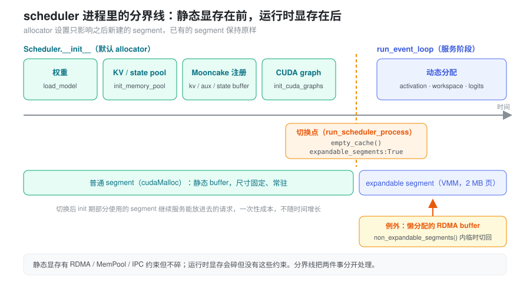

本文讨论 PD 分离部署里 prefill / decode scheduler 进程在长时间运行后出现的 OOM。KV 的记账问题见 Prefill 准入与显存账。本文的问题出在 KV pool 之外，也就是 PyTorch caching allocator 管理的运行时显存。
问题：跑了两三天，3 GB 分配失败，reserved 里还有一大块空闲
线上 Kimi-K3 P2D2-EPD 部署在连续运行两三天后，scheduler
抛出 torch.cuda.OutOfMemoryError：一次约 3 GB
的分配失败，而报错里 PyTorch 自己还持有大量
reserved but unallocated 显存。
这个现象本身已经排除了几种常见原因：
- 不是 KV pool 不够。 KV slot
不足时报的是
Prefill out of memory ... Available full tokens，走的是 SGLang 自己的 token allocator，不是 torch OOM。 - 不是活跃张量太多。 allocator 在抛 OOM
之前，已经把完全空闲的 segment
还给驱动并重试过一次。此时剩下的
reserved − allocated都在还有存活 block 的 segment 里。 - 不是启动配置算错。 同样的配置能跑两三天，说明单次 forward 的峰值装得下，装不下的是“跑了很久之后的同一个峰值”。
剩下的解释是碎片：空闲总量够，但散落在许多 segment 的空洞里，没有一个空洞有 3 GB；每个 segment 又被一两个长寿的小张量钉住，整段还不回去。
部署的几个特点会让碎片累积得更快：
- prefill 的 token 数逐轮变化，activation 和 MHA 展开
KV（
SGLANG_MAX_KV_CHUNK_CAPACITY）的临时张量尺寸也逐轮变化，大块被不同尺寸反复切分。 - 多个 stream 并行（PP 异步、通信、传输），空闲 block 只能给同一 stream 复用。
- 进程不重启，所以“偶尔被钉住一段”会一直累加，直到某一轮的大请求碰上。
所有 yaml 里都没有设置
PYTORCH_CUDA_ALLOC_CONF，走的是默认
allocator。segment、block 和碎片的基本机制见 显存管理与生命周期
中的“分配器内部”一节。
抽象：把回收粒度从 segment 降到页
默认 allocator 的回收单位是
segment：一段 cudaMalloc
出来的显存，只有其中所有 block 都空闲时才能整体
cudaFree。碎片的代价因此按 segment 计：一个几
KB 的小张量能让一整段几百 MB 的显存无法再给大请求用。
expandable_segments:True
换了一种组织方式。每个 segment
是一段很长的虚拟地址，物理显存按 2 MB
页通过 CUDA VMM（cuMemCreate /
cuMemMap）映射进去：
- 分配时，优先用已有空闲 block；不够就把新物理页映射到段尾，地址仍然连续。
- 回收时（OOM 前的重试，或
empty_cache()），空闲 block 覆盖的整页被解除映射、还给驱动，不要求整段空闲。
于是“3 GB 能不能分配”的条件，从“某个 segment 里有 3 GB 连续空闲”变成了“空闲物理页总共够 3 GB”。虚拟地址上的空洞依然存在，但它不再占物理显存。每个空洞最多损失两端不足 2 MB 的零头，碎片的代价从“一个 segment”降到“几 MB”。
为什么不直接在启动时打开
最省事的做法是在 yaml 里加
PYTORCH_CUDA_ALLOC_CONF=expandable_segments:True。但这样从第一次分配起就生效，权重、KV
pool 和所有通信 buffer 都会变成 VMM 内存，而 scheduler
进程里有几类显存对 VMM 有约束：
| 显存 | 约束 |
|---|---|
| Mooncake 注册给 RDMA 的 kv / aux / state buffer | 注册的是固定地址范围，VMM 内存能否正确注册、传输没有验证过 |
torch.cuda.MemPool 里的分配（custom mem
pool、symm-mem） |
torch
直接报错：torch.cuda.MemPool doesn't currently support expandable_segments |
| 走 CUDA IPC 共享的张量 | 需要较新的 torch 和内核 pidfd_open /
pidfd_getfd；weight_cache/daemon.py
发现该配置会直接拒绝启动 |
注意这几类显存的共同点：它们都是启动时一次分配、尺寸固定、常驻的。它们有约束，但从不制造碎片。制造碎片的是服务阶段的 activation、workspace、logits，而这些张量没有上面任何一条约束。
两类显存的需求正好错开，所以可以按时间分开处理：初始化阶段用默认
allocator，把所有静态 buffer 都分配在普通 segment
上；进入服务循环之前，再把 allocator 切到 expandable。torch
允许运行时调用
torch.cuda.memory._set_allocator_settings("expandable_segments:True")，这个设置只影响之后新建的
segment，已有的 segment 不受影响。

分界线画在哪里
分界线要满足一个条件：所有有约束的显存都已经分配完，而服务循环还没开始。
在 scheduler 进程里，这个时刻就是
Scheduler(...)
构造完成、run_event_loop()
之前。Scheduler.__init__ 依次完成了：
- 加载权重；
init_memory_pool分配 KV / state pool；init_disaggregation创建 Mooncake KVManager，它在构造时把 kv / aux / state buffer 注册给传输引擎；- 启动期的 staging buffer（AS、PD staging）；
init_cuda_graphs捕获 CUDA graph，graph 私有内存池也在这之前分配好。
切换时先调一次
empty_cache()，把初始化过程中留下的完全空闲的
segment 还给驱动，让这部分显存可以重新被 expandable segment
使用。初始化期间只用了一部分的 segment
会留下来，继续服务能放进去的小分配。这是一次性的成本，不随运行时间增长。
例外：服务阶段才分配的 RDMA buffer
分界线只在“服务阶段不再分配有约束的显存”时成立。检查初始化链路时发现了一个例外：DraftKVGatherPool（DSPARK
的 draft KV
gather，SGLANG_ENABLE_DISAGG_DRAFT_GATHER
默认开启）在第一次使用某个 slot 时才创建
StagingBuffer，并当场注册给 RDMA；需要更大的
buffer 时还会重新分配、重新注册。
这类分配用 non_expandable_segments()
包起来，在这段代码里临时切回默认 allocator，结束后再切回
expandable。allocator 设置是进程全局的，所以：
- 切换窗口内其他线程的分配也会落到普通 segment，这只是少享受一次 expandable，不影响正确性。窗口应只包住分配本身。
- 多个窗口可能并发，用一把锁防止一个窗口在另一个窗口中途把设置恢复。
以后新增“服务阶段分配、需要注册 RDMA 或进 MemPool”的显存，都要走这个上下文。
跳过的情况
以下情况不切换，打日志后继续用默认 allocator：
- allocator 后端不是
native（例如cudaMallocAsync）； - 开了
--enable-symm-mem：symm-mem 的输出在 forward 中分配在torch.cuda.MemPool里，与 expandable 不兼容； PYTORCH_CUDA_ALLOC_CONF/PYTORCH_ALLOC_CONF已经开启了 expandable segments；_set_allocator_settings抛异常（例如旧版本 torch 或驱动不支持）。
观测：让碎片在日志里可见
修复前，碎片只有在 OOM 那一刻才看得见。为了判断开关是否有效，prefill / decode 的周期统计日志末尾追加了一段 allocator 水位：
torch mem (GiB) alloc: 52.31, reserved: 55.80, frag_gap: 3.49, max_alloc: 58.02| 字段 | 含义 |
|---|---|
alloc |
当前活跃张量占用（allocated_bytes.all.current） |
reserved |
allocator
持有的显存（reserved_bytes.all.current） |
frag_gap |
reserved − alloc：缓存着但没在用的显存 |
max_alloc |
进程启动以来的活跃峰值（allocated_bytes.all.peak） |
这些数取自一次
torch.cuda.memory_stats()，只读 host
端计数器，不做 device 同步，可以放在调度热路径上。scheduler
捕获到 CUDA OOM 时（包括被包在其他异常里、通过
__cause__ / __context__ 串起来的
OOM），也会额外打印一行同样格式的水位。
判读方式：
- 默认 allocator：
frag_gap随运行时间缓慢上涨，最终某一轮的大分配失败。 - 开启后：
frag_gap在 OOM 重试或empty_cache时能被回收，长期应保持平稳。若开启后仍然单调上涨，说明问题不只是碎片，要回到 运行时显存 中“动态显存的两个账户”一节，排查池外增长或泄漏。
启用与验证
开关默认关闭，在 prefill / decode 的 yaml 里加：
export SGLANG_ENABLE_RUNTIME_EXPANDABLE_SEGMENTS=1不要改用
PYTORCH_CUDA_ALLOC_CONF=expandable_segments:True，那会让静态
buffer 也落到 VMM 上，正好违背上文的分界。
启动日志里看到下面这行，说明切换成功：
Enabled PyTorch CUDA expandable_segments for runtime dynamic allocations
(empty_cache reserved X GiB -> Y GiB; torch mem (GiB) ...)上线前需要在预发验证的点：
- RDMA 传输：PD 之间的 KV 传输、AS
读写、DSPARK draft gather 都要跑通，日志里没有
register相关的报错。 - torch 版本：确认镜像里实际的 torch
版本支持运行时
_set_allocator_settings；不支持时会看到Failed to enable ...，服务照常用默认 allocator 运行。 - 长稳：跑 1–2 天，对比开关前后的
frag_gap曲线。
方案的边界
- 初始化后的懒分配：除
DraftKVGatherPool外，没有逐一确认服务阶段是否还有懒捕获的 CUDA graph 或其他懒注册的 buffer。新增此类分配时要记得non_expandable_segments()。 - 覆盖范围：只改了 scheduler 进程。encoder 进程没有接入；非主线程里的 OOM 不会打印水位。
- expandable 自身的开销：映射新物理页要调用驱动，比从缓存里切 block 慢。对 prefill 的大块分配影响很小，但要在压测里确认。
- 不改峰值：expandable
解决的是“有空闲却拿不到”，不解决“峰值本身装不下”。后者仍然要靠
chunked prefill、
SGLANG_MAX_KV_CHUNK_CAPACITY等手段封顶。
实现落点
以下路径相对于 python/sglang/。
| 概念 | 代码 |
|---|---|
| 开关 | SGLANG_ENABLE_RUNTIME_EXPANDABLE_SEGMENTS（srt/environ.py） |
切换、跳过条件、empty_cache |
enable_runtime_expandable_segments()（srt/utils/cuda_allocator_utils.py） |
| 分界线 | run_scheduler_process() 中
Scheduler(...)
之后（srt/managers/scheduler.py） |
| 临时切回默认 allocator | non_expandable_segments()（srt/utils/cuda_allocator_utils.py） |
| 服务阶段的 RDMA buffer | StagingBuffer.__init__（srt/disaggregation/common/staging_buffer.py），由
DraftKVGatherPool._ensure_slot()（srt/disaggregation/common/draft_kv_gather.py）触发 |
| 水位日志 | format_torch_memory_stats()；SchedulerMetricsReporter
的 prefill / decode
统计（srt/managers/scheduler_components/metrics_reporter.py） |
| OOM 时打印水位 | is_cuda_oom_exception()，在
run_scheduler_process() 的异常处理里调用 |
单测在
test/registered/unit/utils/test_cuda_allocator_utils.py，全部
mock 掉 torch.cuda，可以在 CPU
上跑。覆盖水位格式、OOM
异常链识别、各个跳过分支、切换失败时保持默认 allocator，以及
non_expandable_segments()
在正常退出和抛异常时都会恢复设置。
小结
长时间运行的 OOM 不是显存不够，而是默认 allocator 按
segment
回收：一个长寿的小张量就能让整段显存对大请求失效，碎片随运行时间只增不减。expandable
segments 把回收粒度降到 2 MB
页，让“空闲总量够”重新等价于“分配得到”。它不能全局打开，因为
RDMA 注册、MemPool、IPC 这些静态显存对 VMM
有约束。好在有约束的显存都在初始化时分配、从不制造碎片，制造碎片的运行时显存又没有这些约束。所以把分界线画在
scheduler 初始化之后、服务循环之前，再用
non_expandable_segments()
处理少数服务阶段才分配的 RDMA buffer，就能同时满足两边。